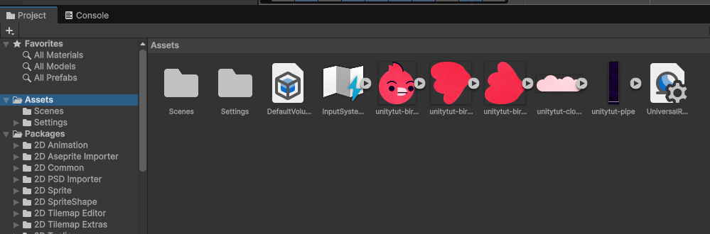
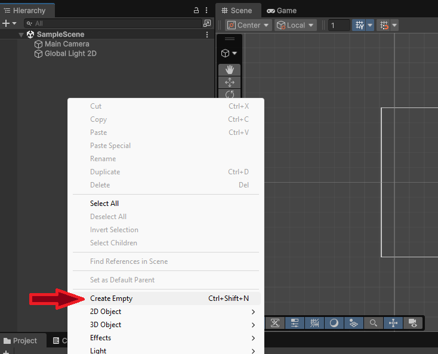
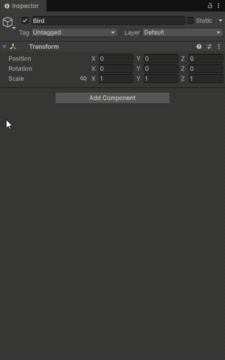

🕹️ Diseño del juego
Ya que tenemos el editor de unity instalado en el ordenador y el proyecto creado, empecemos a usar las herramientas que nos brinda Unity para ir creando nuestro juego.
Tras abrir el proyecto con unity, lo primero que vamos a hacer es importar los sprites dentro de nuestro proyecto para que podamos usarlos dentro de nuestro juego.
👉 Descarga aquí 👈 el archivo ZIP que contiene los sprites que vamos a utilizar para este juego.
Importando los assests
En el área "Project" dentro de la interfaz del Editor de Unity (abajo del todo), seleccionamos la carpeta Assets y a la derecha pinchamos con el botón derecho del ratón y seleccionamos la opción Import New Asset...
Podremos seleccionar todos los assets que queramos importar a nuestro proyecto, independientemente de la extesión que tenga; .png .jpg .mp4 .ogg .mp3
Pinchando y arrastrando
También podemos pinchar y arrastrar los assets a este apartado del editor para importar los archivos a nuestro proyecto

Creando el protagonista
 Nuestro protagonista es este simpático pájaro que tiene que atravesar las diferentes tuberías que se encuentran a varias alturas. Vamos a crear el GameObject relacionado con nuestro colega "Bërd" para darle vida y poder renderizarlo dentro de nuestro juego.
Nuestro protagonista es este simpático pájaro que tiene que atravesar las diferentes tuberías que se encuentran a varias alturas. Vamos a crear el GameObject relacionado con nuestro colega "Bërd" para darle vida y poder renderizarlo dentro de nuestro juego.
Ahora que ya lo hemos importado en nuestra carpeta Assets del proyecto, vamos a hacer uso de los sprites que tenemos. Para ello deberemos crear un nuevo Game Object y asignar ciertas propiedades, entre ellas, el asset del pájaro.
Para crear un nuevo Game Object pinchamos con el botón secundario sobre la sección de jerarquía del editor y pinchamos sobre la opción Create Empty (o también Ctrl + Shift + N para los pros)

¿Qué es un Game Object
En Unity, un GameObject es la unidad básica de cualquier elemento dentro de una escena. En pocas palabras:
👉 Todo lo que ves en un juego hecho con Unity es un GameObject.
Puede representar:
- Un personaje
- Una cámara
- Una luz
- Un enemigo
- Un objeto 3D
- Un botón de UI
- Incluso un objeto vacío usado solo para organización
🧱 ¿De qué está compuesto?
Un GameObject por sí solo es como una caja vacía. Lo que le da funcionalidad son los Componentes. Por defecto, todo GameObject tiene:
- ✅
Transform(posición, rotación y escala)
Luego puedes agregarle ciertas propiedades:
- 🎨
Mesh Renderer→ para que se vea - 💡
Light→ para que ilumine - 🎮
Collider→ para detectar colisiones - 🧠
Script→ para darle comportamiento - 🎥
Camera→ para mostrar la escena
🧩 Ejemplo práctico Si creas un cubo en Unity
Ese cubo es un GameObject con varios componentes.
🏗 Relación jerárquica
Los GameObjects pueden tener padres e hijos.
Ejemplo:
Si el Player se mueve, todo lo que es hijo se mueve con él.
🐦⬛ Añadiento el sprite

Cuando creamos nuestro Game Object le podemos poner un nombre para poder distinguirlo dentro de nuestro proyecto y lo más importante para nuestro personaje 🐦 asignarle el sprite que hemos importando.Para ello, debemos añadir un componente a nuestro Game Object. Para ello, seleccionamos el objeto y en el Inspector pinchamos sobre 👉 Add Component y seguimos los siguientes pasos para asignarle la imagen como srpite:
- En la lista de componentes seleccionamos Sprite Renderer
- En el Inspector pinchamos y arrastramos el asset que queramos al input Sprite
Visualizando el resultado
Ahora que ya tenemos el primer sprite, podemos renderizarlo para ver cómo quedaría el resultado final. Para ello pinchamos sobre el icono de play ▶️ y Unity empezará a renderizar toda nuestra escena.
Así mismo, podremos cambiar las propiedades de nuestro objeto para poder ajustar el tamaño y demás propiedades.
👁️ Que no se te olvide establecer una resolución dentro de la escena para ver un ejemplo lo más real posible.